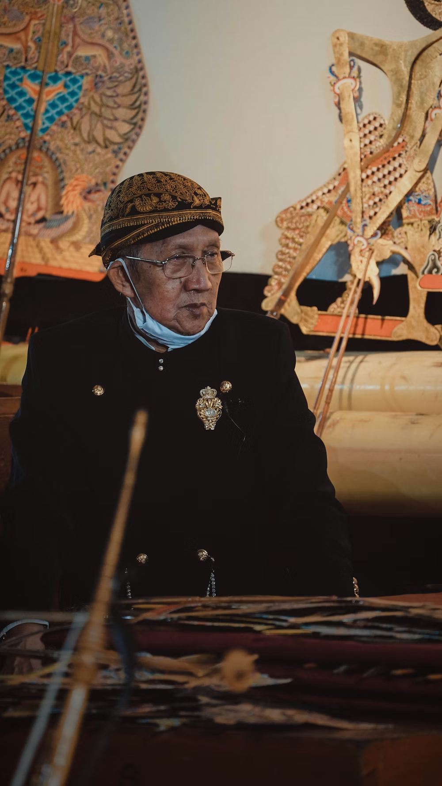
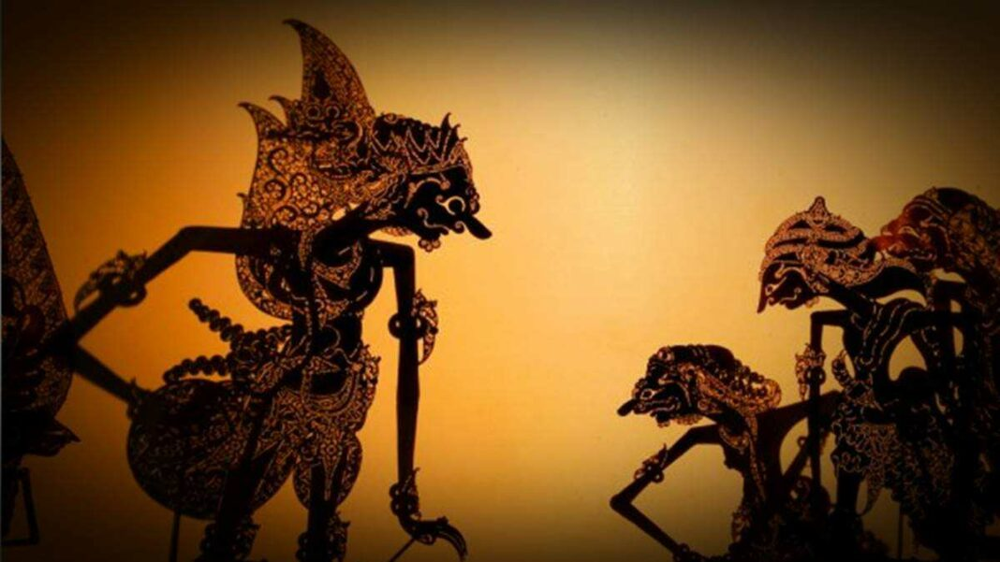
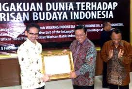

SEJARAH WAYANG
DI NUSANTARA
Warisan tak benda Nusantara yang telah bertahan ribuan
tahun. Sebuah media
untuk
menyingkap ajaran moral, menelusuri akar peradaban, dan menghidupkan kembali kisah kepahlawanan para
dewa dan kesatria.

JEJAK SEJARAH
Kisah warisan budaya tak benda yang diakui dunia.
Dari
pementasan mistis Jawa
Kuno, kini wayang menjadi simbol abadi kekayaan narasi dan seni rupa Nusantara
Abad ke-1 M
Awal Mula & Pengaruh Hindu
Wayang kulit diperkirakan mulai berkembang seiring masuknya pengaruh Hindu-Buddha ke
Nusantara. Kisah Ramayana dan Mahabharata mulai diadaptasi.

Abad ke-10 M
Prasasti Balitung
Catatan tertulis pertama yang menyebutkan pertunjukan 'Mawayang' untuk Hyang, menunjukkan
fungsi ritual sakral wayang pada masa itu.

Abad ke-15 M
Era Kesultanan Islam
Para wali songo menggunakan wayang sebagai media dakwah Islam. Lakon wayang berkembang
dengan nilai-nilai Islam tetap mempertahankan esensi budaya Jawa.

Abad ke-18-19 M
Masa Keemasan Keraton
Wayang berkembang pesat di keraton-keraton Jawa. Standarisasi pakem, gamelan, dan tokoh
wayang disempurnakan oleh para empu keraton.

7 November 2003
Pengakuan UNESCO
UNESCO menetapkan wayang kulit Indonesia sebagai "Masterpiece of Oral and Intangible
Heritage of Humanity", mengakui nilai universal wayang.
